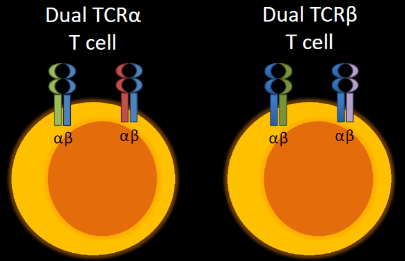

One main line of investigation focuses on how systemic autoimmune diseases lead to cardiovascular inflammation and damage. We use the K/BxN T cell receptor (TCR) transgenic mouse model. K/BxN mice spontaneously develop both inflammatory arthritis and autoimmune valvular carditis. We use this model to study the effector pathways driving the cardiac valve inflammation. Current projects seek to understand the key contributions of CD4+ T helper cells and macrophages in this model.
A second line of research focuses on the potential role of dual TCR T cells in the development of autoimmune diseases. Ongoing projects are focused on a) characterizing the development and function of the T cell repertoire in mice unable to make dual TCR T cells and b) engineering a dual TCRα reporter mouse.
The mitral valves of arthritic K/BxN mice are inflamed and thickened (right) relative to the normal cardiac valves in control mice (left). Modified from Binstadt et al. PNAS 2009.
Additional areas of investigation include understanding how autoantibodies promote the development of arthritis, using the K/BxN serum transfer model.